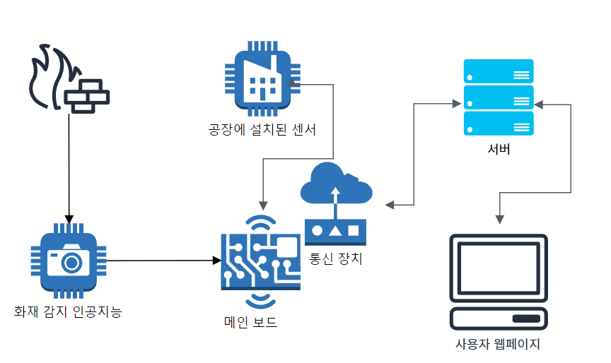

산기평 가스 모니터링 단말
1. 제품 이미지

2. 주요 기능
산업 기능 평가원에서 사용하는 가스 누출 감지 및 인공지는 화재 감지기 Lcd와 사이렌을 사용하여 현재 이벤트 전달
3. 아키텍처 다이어그램
4.나의 역할
- lcd 이벤트, 센서값 표출 기능 구현 → rs485센서에서 측정되는 데이터를 임계치에 비교하여 lcd에 표출
- 이벤트 처리 기능 구현 → bitset으로 저장되는 이벤트 기능을 관리.
- 보드간 데이터 연동 → uart로 연결되어 있는 측정 보드간 데이터 연동
서버 전송 성공 여부, 이전 이벤트 상황등을 고려한 bitset 관리
5. 결과 및 효과
- 1건의 화재 사건 예방, 실시간 화학 가스 누출 감시 시스템 제공